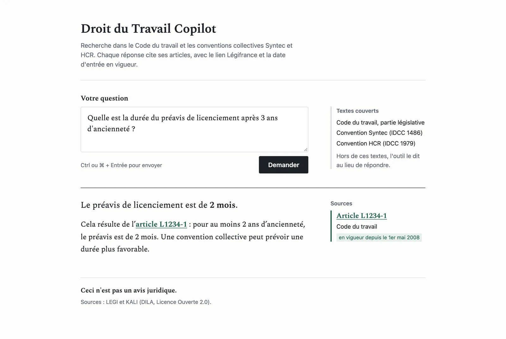
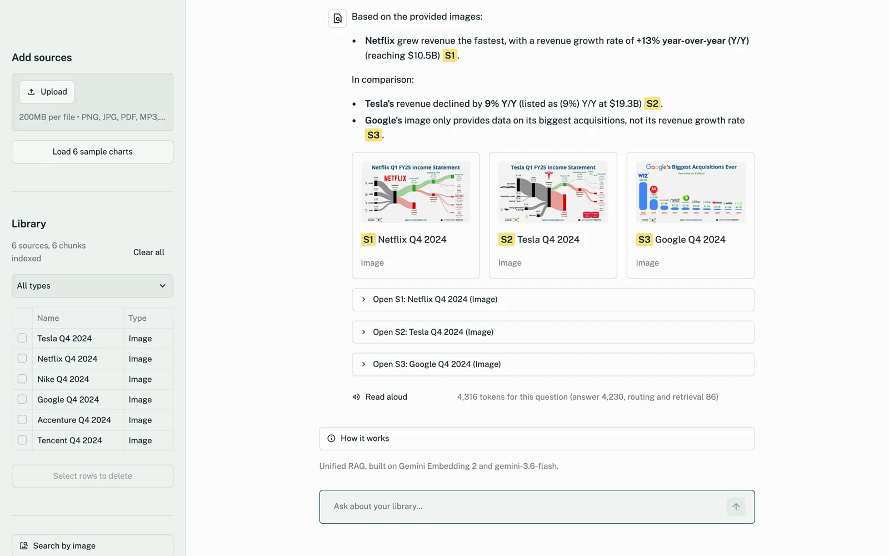
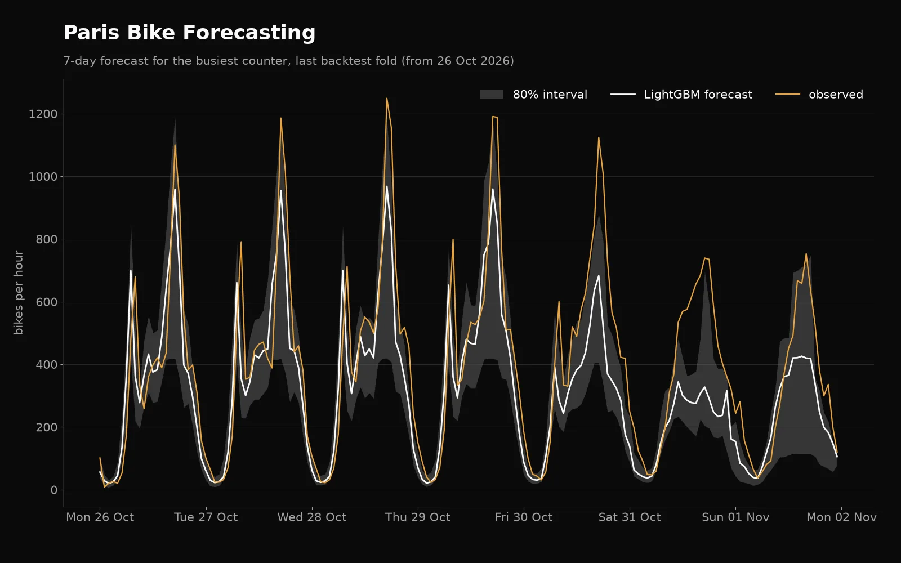

Karthik
AI Engineer in Paris, building LLM and agentic systems.
23 years old
What the projects measured
-
Droit du Travail Copilot
98% of answers cite a correct article on 100 model-reviewed questions, with 2% false refusals
-
Reel History
AWQ gives 2.8× throughput and 9.6 GiB less weight memory than BF16 self-quantized Qwen3-8B explainer
-
Unified RAG
hit@1 raised from 0.59 to 0.70 hybrid BM25 + dense with reranking, on a 100-question golden set
-
AgentOps Harness
False refusals halved, 4.7% to 2.4% without lowering attack success; 72 attacks across 6 OWASP LLM categories
-
Paris Bike Forecasting
LightGBM beats seasonal-naive by 16.5% MAE over 8 rolling folds, with 79% coverage for 80% intervals
About
I'm doing my M.Sc. in AI Systems at EPITA, Paris. Before this I spent about three years building production LLM and machine learning systems at startups.
At Aspireit I was the founding AI engineer on a small team, so the core architecture calls on the recruitment backend were mine: orchestration, APIs, data pipelines. These days most of what I build sits around large language models, mainly RAG and agentic systems.
Projects
Reel History
Film recommendations from your Letterboxd diary, over an 87,000-film catalog.
- GRU4Rec + SBERT + LLaRA, with calibrated confidence.
- Runs on Kubernetes (Helm, Terraform for AKS).
- Self-quantized Qwen3-8B explainer: AWQ gives 2.8× throughput and 9.6 GiB less weight memory than BF16.
GRU4Rec, SBERT, LLaRA, Kubernetes, Helm, Terraform, AKS, Qwen3-8B, AWQ

AgentOps Harness
Red-teams, guards and gates the Droit du Travail Copilot.
- 72 attacks across 6 OWASP LLM categories, in English and French.
- Guardrails halved false refusals (4.7% to 2.4%) without lowering attack success.
OWASP LLM categories, English and French

Paris Bike Forecasting
Hourly forecasts for 95 Paris counters.
- LightGBM beats seasonal-naive by 16.5% MAE over 8 rolling folds.
- 79% coverage for 80% intervals.
LightGBM
MedQuery
Medical Q&A over drug guidelines.
- Hybrid BM25 and FAISS retrieval with rank fusion.
- A multi-agent pipeline behind an MCP server.
- Prompts tracked against an eval set.
Python, FAISS, BM25, MCP
More projects
- CLI Tower Defense Terminal game where two LLMs go head to head in real time, one placing towers, one spawning enemies.Go, OpenAI, Gemini Watch a match Code
- VideoSense Search inside a video with plain language. Indexes frames and transcripts, then jumps you to the matching moment.Python, Gemini, Qdrant, ffmpeg Live demo Code
- NutriLive Realtime nutrition tracking. A FastAPI and WebSocket backend streams to a React frontend.FastAPI, WebSocket, React, Gemini Code
Work experience
-
PrimeloopAI
AI Automation Specialist
Built AI automation pipelines for multiple clients, cutting manual steps out of their data and operations work.
-
Aspireit
Founding AI Engineer
Built the recruitment platform's AI backend as the main developer on a small team. Up-front candidate signal let recruiters skip most of the screening funnel, cutting time-to-hire around 30%.
-
micro1
Software Engineer - AI/ML
Trained and evaluated large language models on code generation, using RLHF and adversarial prompts across Python, TypeScript, and Go.
Education
-
EPITA, Le Kremlin-Bicêtre, Paris, France
M.Sc., Artificial Intelligence Systems
-
Padmasri Dr. B. V. Raju Institute of Technology
B.Tech, Electronics & Communication Engineering
Skills
- Languages
- Python, Go, TypeScript, JavaScript
- LLMs and agents
- LangChain, LangGraph, CrewAI, AutoGen, Agno, Transformers, Hugging Face
- Machine learning
- PyTorch, TensorFlow, numpy, pandas
- Backend
- FastAPI, Flask, Django
- Data
- Airflow, PySpark, PostgreSQL, MongoDB, MySQL, Neo4j, Redis
- Cloud and tools
- Docker, AWS, GCP, Git